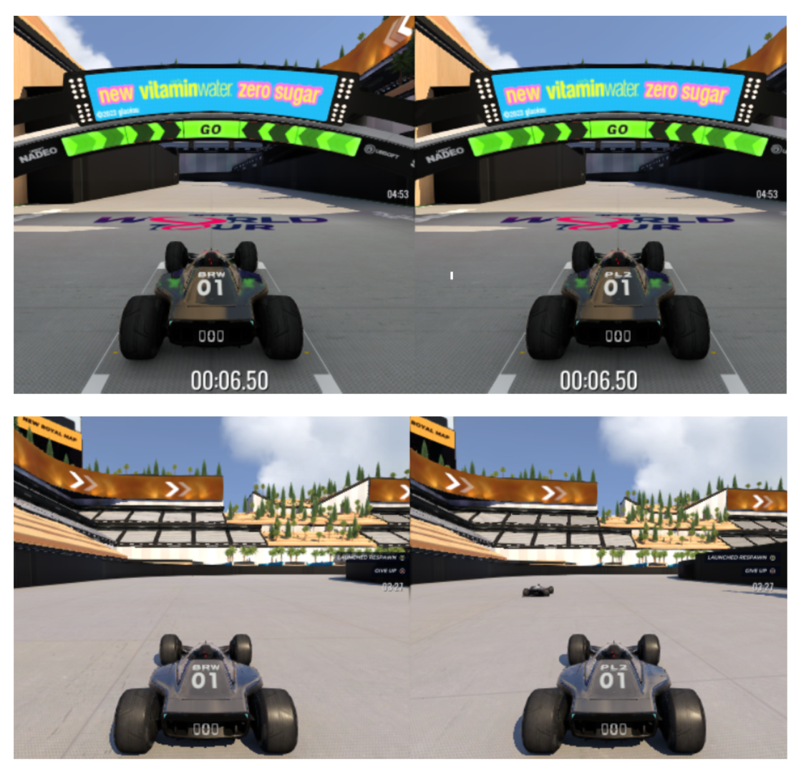

Aloha Kākou! I am an undergraduate researcher at Pomona and Harvey Mudd College , where I build and explore how to make more intelligent and fully autonomous robots. My research interests center around the domain of robot learning – exploring how to design intelligent machines to generalize, adapt, and process the world around them.
I am interested in pushing the limits of robot learning and autonomy through solving physical and cognitive task based limitations in modern autonous robots.
Research Interests
My research aims to improve task based performance and cognition of autonomous agents.
In particular, I am interested in the following:
- Learning how robots can better generalize to new tasks and environments. This includes exploring adaptation in a noisy and unstructured real world.
- Discovering how to leverage information and observations to improve reasoning.
- Drawing from principles in neuroscience and psychology, to test and develop cognitive functions for improved autonomy and task performance.
Publications
Multi-Robot Expansive Planning and Trajectory Evaluation for Tracking and Localization of Marine Life
Kehlani Fay, Michael Giordano, Alberto Soto, Christopher Clark, Emily Spurgeon, James Anderson, & Christopher Lowe
Presentation Slides •
PDF
Catching Everything Everywhere All at Once
Kehlani Fay*, Alexandre Kirchmeyer*, Kenneth Shaw, Ananye Agarwal, & Deepak Pathak
(In Preperation) Webpage •
(In Preperation) PDF
Multi-AUV Marine Life Tracking via Single Transceiver Payloads (Journal Extension)
Christopher Herrera, Kehlani Fay, Alberto Soto, & Christopher Clark
(Spring/Summer Preperation) Webpage •
(Spring/Summer Preperation) PDF
Workshops and Posters
Towards Risk Aware Racing Agents: Learning Adaptive Policies in Competitive Racing Games
Kehlani Fay and Victor Shia
PDF

Towards Generalized Dynamic Grasping: Learning to Catch with Low-Cost Robot Hand
Kehlani Fay, Kenneth Shaw, Shikhar Bahl, Alexandre Kirchmeyer, Ananye Agarwal, Deepak Pathak
RISS Working Papers Journal 2023
Poster •
PDF •
Video


Community
As a mixed Kānaka Maoli, I am involved with several student organizations to help support Indigenous, Latina, LGBTQIA+, and Women+ in STEM which, likewise, have also helped support me. These organizations range widely from mentorships in STEM to connecting and supporting Indigenous resources on campus.
Indigenous Peer Mentorship Program (IPMP) + Advancing Indigenous People in STEM (AISES)
The Indigenous Peer Mentorship Program is a 5C resource dedicated to helping students form community, connect with language resources, and native resources. I am also involved within a subset, Pacifika, which focuses on Indigenous Pacific Islanders' needs and forming community. Through IPMP, I was able to attend AISES and present my work.
MuddSub
I lead an autonomous underwater robotics team and mentor incoming students on how to build and program autonomous robots. I also provide workshops for beginners on autonomy and mechanical design through DuckiTown and similar tutorials.
SACNAS + Built by Girls + Society of Women Engineers (SWE)
Built by Girls is a program designed to connect high school and undergraduate students with paired mentors who they work with on a small project to explore their interests. I served as an ambassador to connect high school and undergrads through the program and guide the application process. I am likewise involved in the SACNAS and Society of Women Engineers chapter at the 5Cs.
Projects